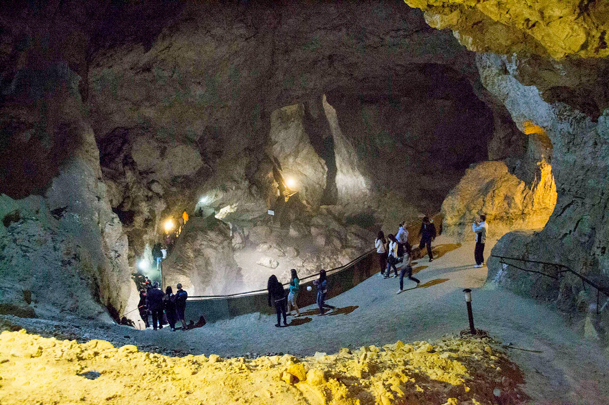
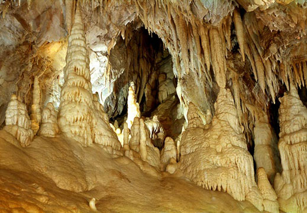
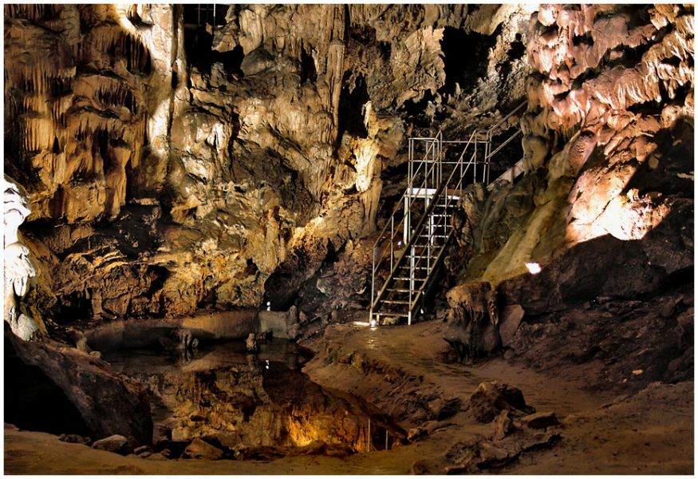

Дяволското гърло е пещера в южната част на Родопите. По вид е пропастна пещера, която се е формирала след пропадане на земни пластове. Името си носи от формата на изхода й, който наподобява дяволска глава. Основната й част представлява огромна зала, в която се намира най-високият подземен водопад на Балканите. Тук зимува най-голямата в България, а и на Балканския полуостров колония на пещерен дългокрил прилеп. Една от легендите от времето на траките говори, че именно в тази пещера Орфей се спуска в подземното царство на Хадес, за да спаси своята любима Евридика.
Пещерата Леденика е разположена във Врачанския Балкан, в близост до Враца. Името Леденика носи заради ниската температура във вътрешността й - около 8 градуса, също така и заради ледените форми, които се образуват през зимата в залите. Пещерата има десет зали, а в най-голямата, наречена Концертна, се провеждат концерти заради акустиката й.
 